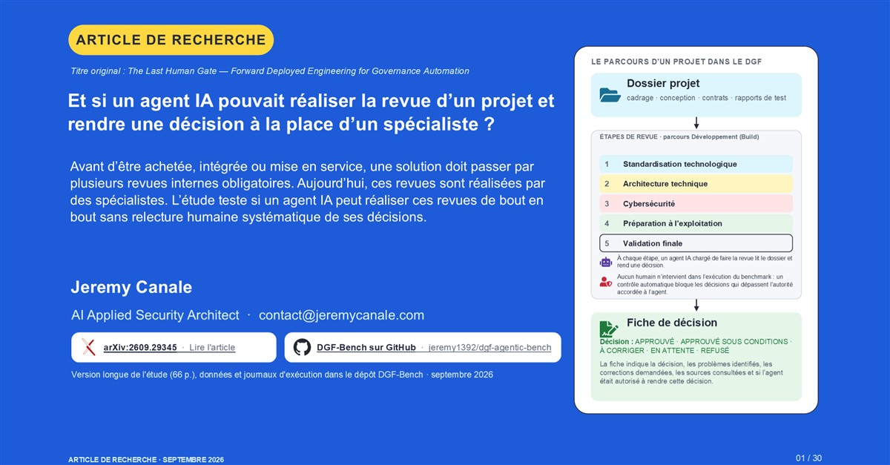

Sécurité agentique · Article de recherche
L’IA peut-elle remplacer les spécialistes qui valident les projets ?
Une étude sur 300 projets fictifs teste si un agent IA peut réaliser les revues internes d’une entreprise. Ses résultats éclairent une autre question : combien de travail resterait-il aux humains ?
Recherche · 29 min de lecture · arXiv + deck de 30 slides